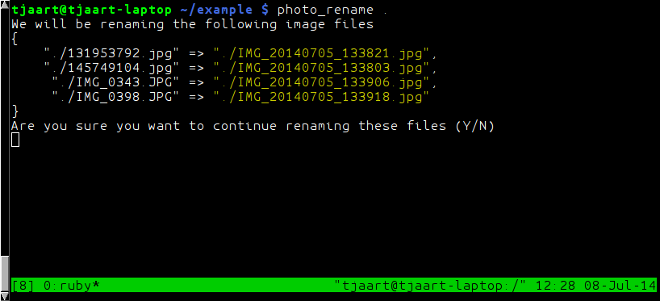

Photo Renamer

What the script does
This script is fairly specific. It renames all JPG files (technically files with a .jpg or .jpeg extenstion) in a given directory to the form IMG_yyyymmdd_hhmmss.jpg
Rationale
The naming pattern described above is the naming pattern used by the stock Android camera. Renaming photos taken with other devices to this scheme allows me to seamlessly merge photos into a single directory and maintain consistent file names.
Extracting the date
exif meta data
Per default we now use the JPEG exif meta data to find the creation date of the file. This gives much more reliable results than using the mtime of the file.
Read this blog entry if you are interested in why this was an important change for me.
mtime
It is still possible to find the date with mtime using the -f command line switch, but using the exif metadata is the highly preferred method.
After some experimenting I found that if I copy photos from my camera's memory card to my PC the "Modify Time" field gets preserved. Therefore I use this field as the basis for renaming the files. Obviously if you modify the file before renaming the mtime field will get updated and your file name will be wrong, so be warned!
IMPORTANT NOTE
Since I am renaming files based on the date created by the device that captured the image, this device's date should be correctly set. (For the next release I want to add more options to manually set the date)
Installation
Dependencies
Since version 0.1.0 we use exif metadata to get the file creation date by default. We use the ruby library mini_exiftool which has a dependency on exiftool.
exiftool should be easily installable through the package manager of most distributions.
Arch Linux
pacman -S perl-image-exiftoolUbuntu
apt-get install libimage-exiftool-perlOSX
http://www.sno.phy.queensu.ca/~phil/exiftool/ExifTool-10.00.dmg
Windows
http://www.sno.phy.queensu.ca/~phil/exiftool/exiftool-10.00.zip
Ruby Gems
The easiest way to install the script is by using rubygems.
gem install photo_rename

Usage
photo_rename photo_directory

Change log
0.1.1
- Remove some debug output
0.1.0
- Use mini_exiftool to get the date from image metadata
- Removed
-bcommand line option, as this is not implemented yet
0.0.4
- Do not rename files that are already in the correct format.
0.0.1 - 0.0.3
- Sort out teething problems with gem.
License
This program is licensed under [(http://www.gnu.org/licenses/gpl-3.0.txt)[GNU GPL]]